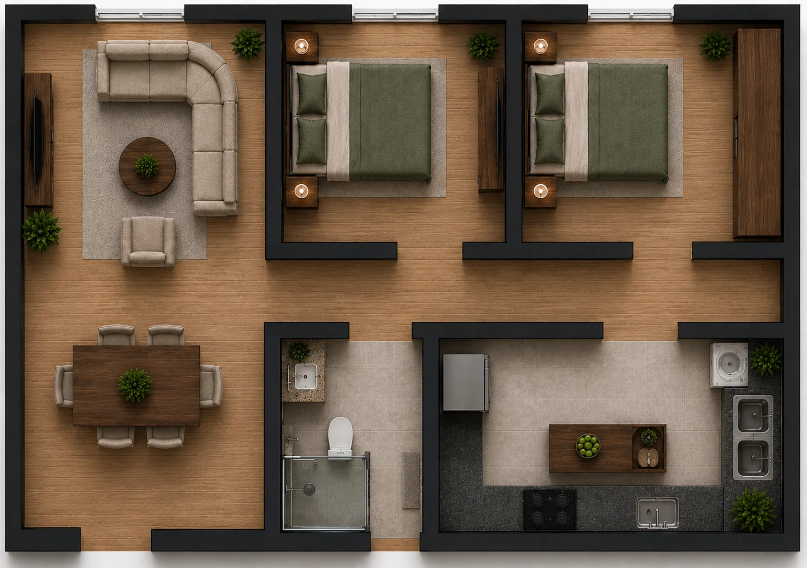
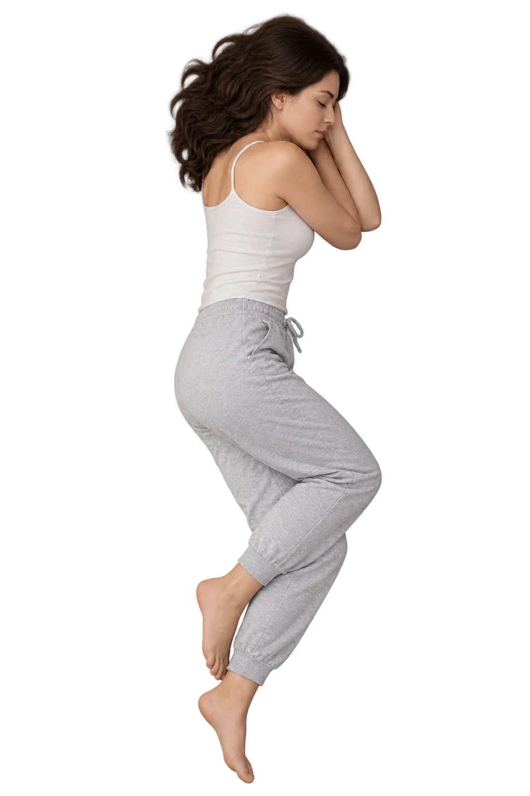

Comece pela função seno de referência f(t)=sen(t). Depois, use os quatro parâmetros de V(t)=a+b·sen(ct+d) para transformar essa curva até que ela represente o padrão respiratório indicado pelos pontos do gráfico.
As três curvas representam diferentes níveis de esforço. Além dos marcadores móveis, o gráfico indica linhas médias e pontos notáveis com suas coordenadas. Use essas informações para determinar amplitude e período e, depois, transforme-as em taxas de consumo de ar.
Toque ou clique nos pontos destacados dos estados moderado e intenso para visualizar suas coordenadas.
No estado de baixo esforço, os valores já foram obtidos na etapa anterior. Para os estados moderado e intenso, use as coordenadas dos máximos, mínimos e pontos da linha média indicados no gráfico para calcular a amplitude e o período.
| Estado | Amplitude (L) | Período (s) |
|---|---|---|
| Baixo | 1,00 obtido na Etapa 1 | 3,0 obtido na Etapa 1 |
| Moderado | ||
| Intenso |
O equipamento da missão utiliza um cilindro de 6,8 L a 300 bar. Para o jogo, use a aproximação linear abaixo.
Defina o maior tempo de avanço antes do retorno automático.

